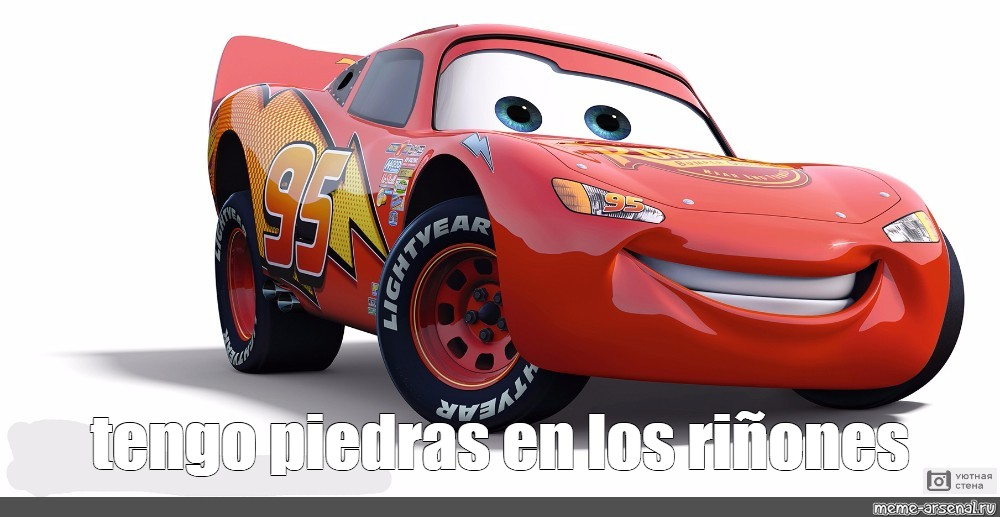
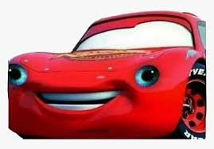

CARTA DE BERSERK SE REVALORIZA TRAS LA MUERTE DE KENTARO MIURA

Berserk es, actualmente, de los mangas mas valorados y respetados del momento. Esto gracias al gran esfuerzo y genialidad de su autor Kentaro Miura, que nos dejo el 6 de Mayo del 2020 a los 54 años debido a una disección aórtica aguda.
Durante la serialización de Berserk, se crearon unuas cartas estilo Magic para promocionar el manga, pero no terminaron de despegar y se terminaron cancelando.
Actualmente estas cartas estan siendo revendidas a precios desorbitados por su revalorización tras la muerte de Miura.
Para más información:
RAYO MCQUEEN SE RETIRA TEMPORALMENTE DE LAS CARRERAS

El coche de carreras más famoso de los últimos tiempos, Rayo McQueen, comento en una entrevista antes de una de sus diarias carreras, que esta sería su última carrera.
Obviamente no será para siempre, sino que por temas medicos tendrá que reposar por unos meses.
Se filtró que padecia de piedras en los riñones, pero que ya habia comenzado su tratamiento y que no hay que preocuparse, que volverá con más fuerza que nunca.
FOTO ACTUAL EN EL HOSPITAL DE PARÍS, XECOSLOVAQUIA
